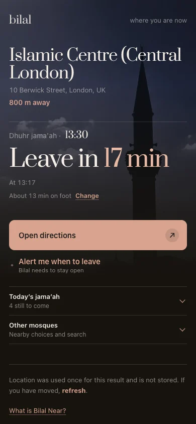

Your mosque's real time
Bilal reads the timetable your mosque publishes. It does not guess jama'ah from a calculation.
Bilal shows your mosque's own jama'ah times, counts your journey, then calls the house at the moment you need to move.

A short film about the call to prayer, the rooms it has filled, and the one it lost.

Best with sound on.
A start time is information. An athan in the room, timed to your actual jama'ah, is a call.
Bilal reads the timetable your mosque publishes. It does not guess jama'ah from a calculation.
Tell it how long you need to get there, whether you walk, drive, cycle, take transit or get a lift.
When Bilal sounds, there is no calculation left to do. Go now and you will make the jama'ah.
Start with what you already own. We will show you one route, from first open to first athan.
Why we recommend it: it is already a room-scale screen with a speaker and touchscreen. Bilal keeps the page awake when Silk would normally close it.
The app is the dependable TV route: it stays awake, starts again after a power cut and needs no extra tap for sound. Fire TV Stick 4K Select and the 2026 Fire TV Stick HD run Vega OS, so use the Silk browser route under “Something else” instead.
Each works. Open only the screen you are considering, and we will tell you the honest tradeoff.
Open bilalathan.co.uk/?display=1, choose your mosque from the link on screen, then press F for fullscreen.
Good for: hearing Bilal work in the next few minutes. Computers sleep, so it is not the most dependable room screen.
Open Silk, go to bilalathan.co.uk, scan the QR code, then set Settings → Display & Sounds → Screensaver → Never.
Good for: Vega OS Fire TV sticks that cannot install the app. Amazon also hides a second sleep timer, so test it before relying on it.
Open bilalathan.co.uk/?display=1, scan its code with your main phone, then leave the device on charge where you will pass it.
Good for: the cheapest second room. The ?display=1 is what tells a phone to become the display.
Open the TV's browser, go to bilalathan.co.uk and follow the QR setup.
Good for: Samsung, LG and other TVs with a browser. Whether the page stays awake depends on the model, so give it ten minutes before trusting it.

Near finds the next trustworthy jama'ah around you, tells you when to leave and opens the mosque pin in Maps.
Location is checked once and never kept. Add Near to your Home Screen when you want it close.
Find jama'ah near meThe first athan was a man.
The Prophet ﷺ asked Bilal (RA) to call people to prayer, and when his voice went up over Madinah people left what they were doing and walked.
If you can hear that from your house, you do not need this. I cannot, and most of us cannot. What we have instead is athan apps, and they are not fit for purpose. Most do not even make a sound anymore. The ones that do play give you the prayer's start time, which is not when anything happens at your masjid.
So that is the experiment. If I hear the athan out loud at the time I was meant to leave, the way it was always meant to work, can I build the habit? Set it up once and find out.
I hope it does for your house what it has done for mine.
Sakib
Choose the screen you already have. Bilal will guide you from there.